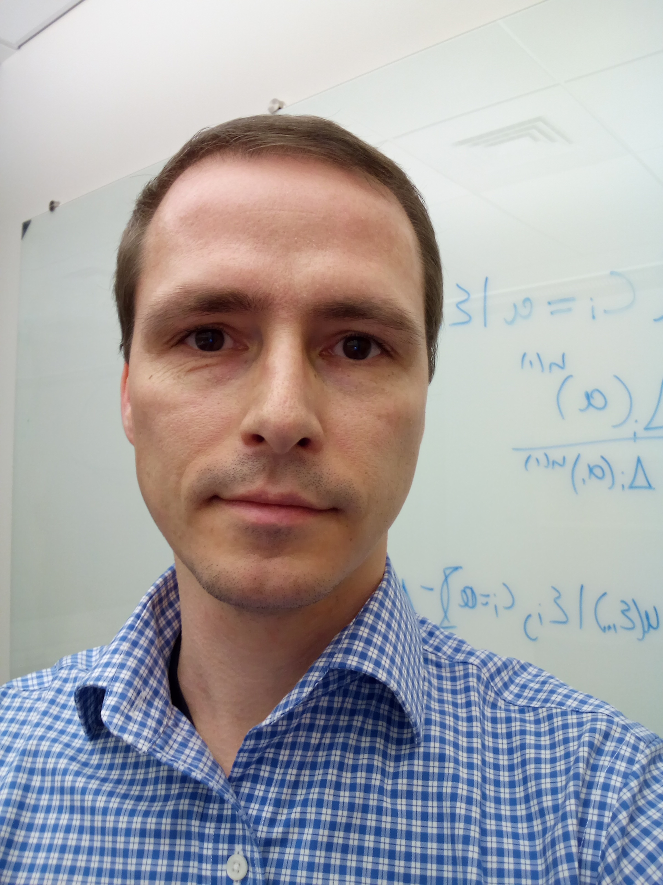

|
|  |
Contact
9 Greenhouse Road
Room 245
|
Kingston, RI 02881
Email: ventzer@yahoo.de
|
About me
Hi, I’m Steffen Ventz. I am a statistician at the University of Rhode Island.
My research interests are mainly in response-adaptive clinical trials, statistical computation,
Bayesian decision theory and Bayesian analyses.
I’ve done recent work on information theory, Bayesian dose finding methods, platform trials,
basket experiments, statistical inference under adaptive sampling designs.
My recent collaborative projects have involved applications in cancer and infectious disease.
See my Papers and Software pages for more details.
Research Interests
Bayesian Statistics, Statistical Decision Theory,
Adaptive methods for Sequential Statistics Experiments, Monte-Carlo Optimization,
Bayesian Adaptive Design of Clinical Experiments, Basket trials, Platform Trials,
Multi-Study Risk Prediction Methods
Education
PostDoc Department of Biostatistics, Harvard University, Boston 2013-2015
Ph.D. in Mathematical Statistics, Bocconi University, Italy, 2013
M.Phil in Mathematical Statistics, Bocconi University, Italy, 2010
M.A. in Mathematical Demography, University of Rostock, Germany, 2007
B.S. in Mathematical Demography, University of Rostock, Germany, 2005
Academic Experience
Assistant Professor, Department of Computer Science and Statistics, University of Rhode Island, 2015 -
Scientific Member, Program in Regulatory Science, Dana-Farber Cancer Institute, 2017-
Visiting Scientist, Department of Biostatistics and Computational Biology, Dana-Farber Cancer Institute, 2015 -
Research Fellow, Department of Biostatistics, Harvard University, 2013-2015
Research Fellow, Department of Biostatistics and Computational Biology, Dana-Farber Cancer Institute, 2013-2015
News
- 2017/05: Steffen gave a talk at on Bayesian uncertainty directed sampling at MBSW in Muncie, Indiana
- 2017/05: Our paper on response adaptive designs for Platform studies has been accepted by Biostatistics
- 2017/04: Our paper on Platform methods has been accepted by JCO
- 2017/01: Our paper on Bayesian Basket designs has been accepted by Biometrics
- 2016/06: Our paper on Adaptive designs for surrogate outcome models has been accepted by Clinical Trials
- 2015/03: Our Biometrics paper on the control of Frequentist operating characteristics for Bayesian designs is out
|